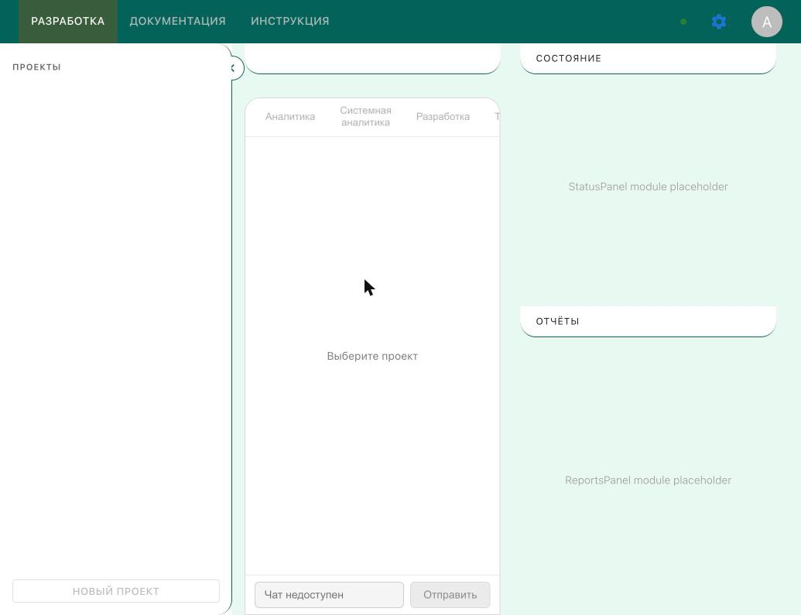

Движок конвейера
Go-сервис ведёт задачу по четырём фазам. Агенты не вызывают друг друга —
они пишут файлы. Watcher замечает изменение через fsnotify,
по карте маршрутов перекладывает результат во входной каталог следующего
агента и запускает его. Фаза двигается, когда завершился её оркестратор.
Прогон конвейера
Ниже — запись настоящего прогона. Её делает make trace:
программа поднимает тот самый PipelineWatcher на временном
каталоге и отмечает агентов завершёнными, как это делал бы живой агент.
Порядок фаз, AND-гейты и переключение фаз здесь — рабочий код, а не
пересказ. Вызовов модели нет, поэтому ключи не нужны.
ui/data/engine-run.js, сгенерирован .ai/scripts/cmd/pipeline-traceПробел — играть и пауза, стрелки — шаг. По строке журнала можно кликнуть.
Что видно в записи
| Момент | Что происходит |
|---|---|
Фаза business |
Четыре аналитика уходят в работу одновременно. Фаза не двигается, пока хотя бы один из них не завершён. |
AND-гейт в development |
В журнале появляется agent_triggered development/reviewers — ровно в тот момент, когда backend и frontend оба стали done. Это и есть гейт из andGates. |
phase_advanced |
Переход фазы происходит после завершения оркестратора, а не после всех агентов подряд. |
Как устроено
Два Go-модуля
engine/
.ai/scripts/ модуль harvester/scripts — движок
pipeline-watcher.go fsnotify, phaseOrder, andGates, переходы фаз
pipeline-state.go чтение и атомарная запись состояния
agent-runner.go запуск агента
lib/
context-builder.go сборка контекста по карте маршрутов
llm-client.go 4 провайдера, ретраи
response-parser.go разбор <file name="…">, поиск вопросов
file-io.go атомарная запись, копирование по маршруту
app/backend/ модуль harvester/backend — HTTP и WebSocket
internal/{config,domain,repository,service,transport}
Второй модуль подключает первый через replace в
go.mod, оба перечислены в go.work. Корень
репозитория модулем не является, поэтому go build ./...
запускается внутри каждого модуля отдельно.
Состояние
СУБД нет. Состояние конвейера — это pipeline-state.json в
каталоге проекта, который пишется атомарно: временный файл рядом и
rename (internal/repository/atomic.go).
Поскольку источник правды — файл, его одинаково видят движок, агент и
человек с текстовым редактором.
API
| Маршрут | Назначение |
|---|---|
GET /health | проба для Docker и Caddy |
GET /ws | WebSocket: состояние, события агентов, вопросы |
GET /api/pipeline/state | текущее состояние конвейера |
POST /api/pipeline/phase/:phase/ok…/notok | гейт между фазами |
POST /api/pipeline/agent/:name/retry…/skip | перезапуск и пропуск агента |
GET/POST /api/projects… | список, открытие, создание проекта |
GET/POST /api/qna… | вопросы агента и ответы на них |
GET/POST /api/chats/:phase | переписка по фазе |
GET /api/tasks, GET/POST /api/settings | задачи и настройки провайдера |
Схемы
Рабочие схемы архитектуры. Исходники — Obsidian Canvas
(engine/assets/canvas/); формат проприетарный, поэтому они
переведены в SVG скриптом tools/canvas-to-svg.py
(make diagrams) и открываются в любом браузере.

Схема шире экрана — прокручивается в обе стороны.
route-map.json → сборка контекста из истории и
входов → вызов модели → разбор блоков ответа → атомарная запись
файлов → проверка qna → копирование результатов по
маршрутам → отметка в pipeline-state. Слева — развилки
состояния: пока агенты работают, новое сообщение не запускает
прогон, а при waiting:qna уходит в обработчик паузы.
Открыть в полный размер

fanout, где стоят AND-гейты и
точки wait:approval, как ходят уточнения
(clarifications/ — асинхронно, не блокируя агента) и
куда накапливается experience.md. Это та же механика,
которую проигрывает запись выше. Здесь схема сжата по ширине, чтобы
была видна форма графа —
откройте в полный размер,
чтобы прочитать подписи.
Интерфейс

Запуск и проверки
cd engine
cp infra/.env.example infra/.env # выбрать провайдера, вписать один ключ
make install # go mod download + npm ci
make dev # API :3100, интерфейс :5173
make test # 38 Go-тестов + typecheck фронтенда
make trace # перезаписать данные для этой страницы
docker build -f infra/docker/Dockerfile -t harvester/api .
curl localhost:3100/health # {"status":"ok"}Тесты
| Модуль | Тестов | Что покрыто |
|---|---|---|
.ai/scripts | 34 | переходы фаз, AND-гейт, сборка контекста, разбор ответа модели, атомарная запись |
app/backend | 4 | карта маршрутов, /health, CORS и preflight |
Ограничения
Десктоп-сборка на Tauri не работает.
Оболочка написана, но src-tauri/src/lib.rs ищет sidecar по
пути app/backend/dist/main.js и запускает его через
node — это осталось от более ранней версии бэкенда на
NestJS. Нынешний Go-бэкенд говорит по HTTP. Рабочий режим — веб.
Правая колонка интерфейса — заглушки.
StatusPanel и ReportsPanel ещё не реализованы.
templates/web|mobile|desktop — это спецификации.
30 markdown-файлов с описанием модулей и ожидаемой структуры, без кода.
В новый проект копируется только templates/ai/.
Инфраструктура не развёрнута. Terraform для двух облаков, cloud-init и Caddy описаны, но на сервер не выкатывались. CI в репозитории нет. Docker-образ собирается и проходит healthcheck.
Слои service и repository бэкенда
без тестов.